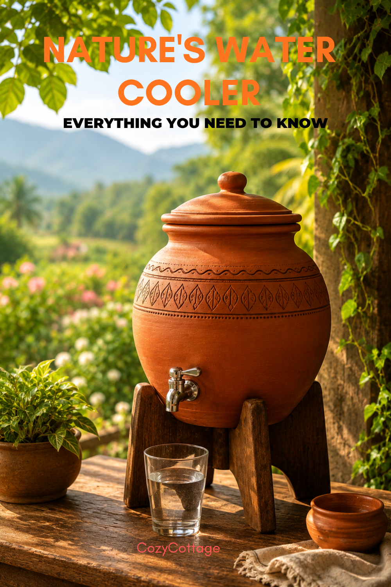

Disclaimer: As an Amazon Associate, I earn from qualifying purchases.

Drinking water stored in clay containers — often called earthen pots, matkas, or mud pots — is a traditional practice in many parts of India and still has some practical benefits.
How clay pots cool water?
Clay is porous. Tiny pores in the pot allow a small amount of water to seep to the outer surface and evaporate. That evaporation naturally cools the remaining water inside, similar to how sweating cools the body.
What are the potential benefits?
Naturally cool water
The cooling is gradual and mild, unlike refrigerator water, which can feel too cold for some people. Many find clay-pot water easier on the throat and digestion.
No electricity needed
It's an energy-free cooling method and environmentally friendly compared to refrigerators or plastic dispensers.
Taste improvement
Many people prefer the earthy taste and smell of water from clay pots. Some feel it tastes "softer" or fresher.
Reduced plastic exposure
Using clay containers instead of plastic bottles or tanks can reduce exposure to microplastics and certain chemicals that may leach from low-quality plastics.
Slight alkalinity
Some clay pots may mildly increase water alkalinity because of natural minerals in the clay, though the effect is usually small and not medically significant for most people.
Tips for using a clay water pot
1. Soak a new pot in clean water for several hours before first use.
2. Keep it in a shaded, airy place.
3. Cover the opening to keep dust and insects out.
4. Clean weekly with warm water and a soft brush. Avoid strong detergents that can soak into the clay.
Hygiene Tips for Earthen Pots
1. Always use clean drinking water in the pot.
2. Wash the pot regularly to prevent algae, biofilm, or bacterial growth.
3. Avoid keeping water stagnant for too many days.
4. Use a clean ladle or tap instead of dipping hands or used cups into the pot.
5. Replace cracked or moldy pots.
Where to Buy?
When I was young, I used to go to a nearby place where they made fresh clay pots — a pottery village. I still remember the smell of wet clay and the rows of pots drying under the sun. We used them every day at home for cooking and also to store cool drinking water. When we went abroad, my mother would carefully wrap the clay pots and place them safely in our luggage because she never wanted to lose that taste of home. These days, things have changed a lot, and we can easily buy clay pots online, but the memories connected to them still feel special.

Village Decor Terracotta Water Pot with Lid & Stainless Steel Tap — 4 Litre

Terracotta Double Handled Amphora Water Jug — Clay Pitcher & Wine Carafe

Terracotta Earthen Clay Water Pot with Metal Tap— 7 Litre

Desi Potters Terracotta Water Dispenser with Metal Tap — 5 Litre

Clay Water Dispenser with Tap — 5 Litre

Traditional Clay Pot Water Dispenser — 10 Litre

Village Decor Earthen Clay Pot Water Dispenser with Metal Tap — 6 Litre